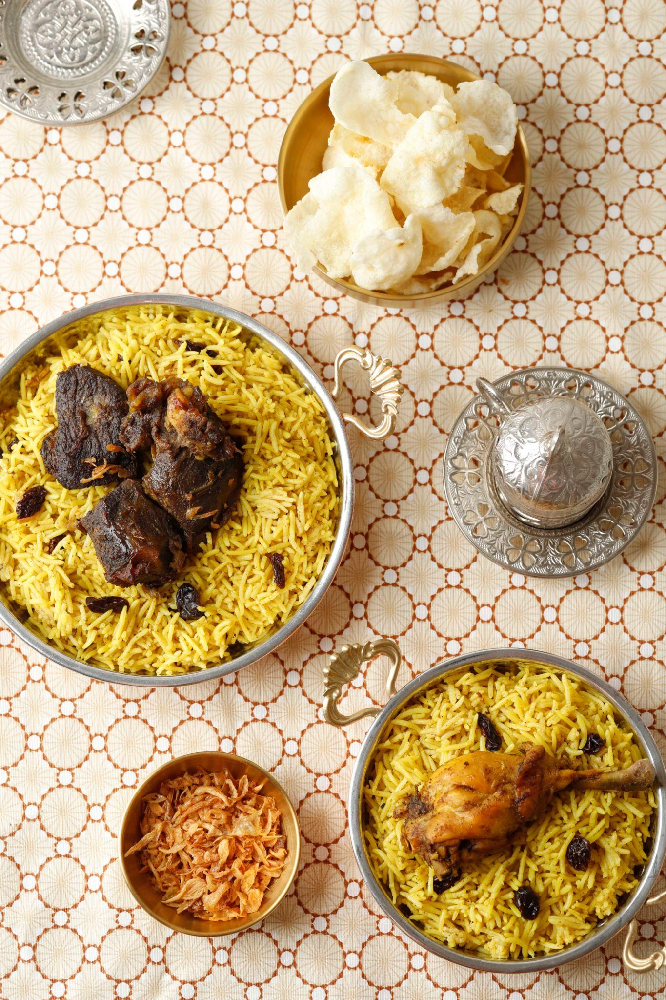

Home
Chicken Biryani

Chicken Biryani is a fragrant and flavorful rice dish made with tender chicken, aromatic spices, and basmati rice. Tamil-style biryani is well-balanced in spice and richness, making it a favorite for special occasions and family meals. It is best served hot with raita or boiled eggs.
Ingredients
- 500g chicken
- 2 cups basmati rice
- 2 onions (sliced)
- 2 tomatoes (chopped)
- 2 tbsp ginger-garlic paste
- 1 cup yogurt
- 2 tsp biryani masala
- Whole spices (bay leaf, cloves, cinnamon)
- Mint and coriander leaves
- Oil or ghee
- Salt to taste
Steps
- Marinate chicken with yogurt, salt, and spices for 30 minutes.
- Heat oil and sauté whole spices.
- Add onions and cook until golden brown.
- Add ginger-garlic paste and tomatoes; cook until soft.
- Add marinated chicken and cook until partially done.
- Add soaked rice and required water.
- Cover and cook on low heat until rice is fully cooked.
- Garnish with mint and coriander leaves and serve hot.